Learning Objectives
After completing this lesson, you’ll be able to:
- Use a feature type fanout on fme_feature_type to return records to their original layer.
- Use a .zip extension to create zipped output datasets.
Instructions
In this lesson, you will:
- Scroll down to read the text below.
- Optional: You can view the video instead of reading the text. The video covers the text material.
- Complete the exercise by following the steps.
- Complete the Quiz toward the bottom of the page.
- Optional: Let us know if you found this lesson relevant to your role by filling out the survey at the bottom of the page.
- Click 'Next' to mark the lesson complete.
Resources
Exercise

As a resident FME expert, Jennifer is often asked to translate data (particularly the community map) between formats. She realizes it would be much simpler if she created a workspace to do this, regardless of format, and let the end-users carry out the translation themselves. She's started building a workspace, but now you need to help her add fanouts to ensure the users receive data in the form they expect.

This would make an excellent use for an FME Flow Data Download service in the future, but for now, we'll let the users run the workspace in FME Workbench. See the FME Flow Authoring learning path to learn more about creating self-serve data download workflows.
1) Open Starting Workspace
- Start FME Workbench (2026.1 or later).
- Open the starting workspace (C:\FMEData\Workspaces\AdvancedDataTransformation\use-fanouts.fmw).
2) Explore the Workspace
- View in the Navigator that this workspace reads in a community map file, Geodatabase, and writes out to the Generic format.
- The Generic format lets the user choose which format to write. You can learn more in the documentation.
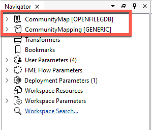
- Still in the Navigator, under User Parameters, observe that the workspace provides four format choices to the user, controlled by User Parameters > OutputFormat.
- This parameter is linked to a format parameter in the Generic writer.
- Confirm that the user has also linked the FEATURE_TYPES user parameter to the Reader Parameters > Features To Read > Feature Types to Read parameter.
- This user parameter lets the end-user choose which feature types to read, and therefore write.
- Observe that the reader feature type is named <All>.
- This name means the reader feature type is merged. It will read all records into one stream rather than individual feature types per geodatabase feature class.
- Observe that the writer feature type is set to write to a single feature type named NewFeatureType.
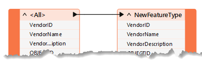
If the workspace is run now, the user can choose the feature types and format, but FME will return the results in a single layer/file. This result could be more optimal. Let's change the workspace so the user receives separate layers/files for each feature type. We'll also zip the output for convenience.
3) Set Feature Type Fanout
We want to output records to their original table. To do this, we need to know where they came from, which is obtained from a format attribute called fme_feature_type.
- Inspect the properties for the NewFeatureType writer feature type.
- Set a fanout by choosing
fme_feature_type as the attribute setting the Feature Type Name.
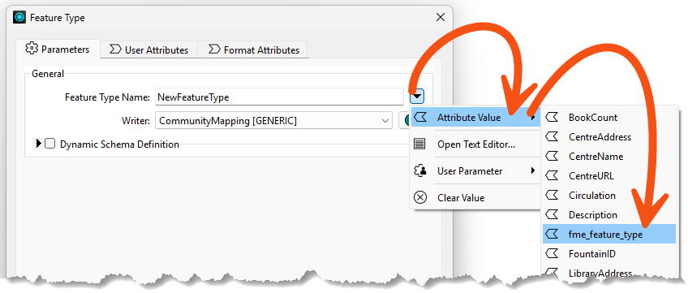
- Your dialog should look like the image below.
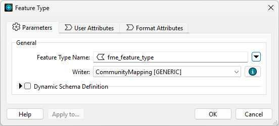
- Click OK.
- Notice the name of the writer feature type on the canvas will change to
<@Value(fme_feature_type)> to reflect the use of a fanout.
4) Create a Zipped Output
- In the Navigator, find the Destination Generic (Any Format) Folder writer parameter.
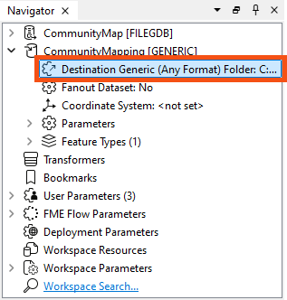
We will create a zipped folder to contain all of our files.
- Double-click the Destination Generic (Any Format) Folder writer parameter and set the location of an output folder to:
C:\FMEData\Output\Training\CommunityMapping.zip
This will create a zipped file called CommunityMapping.
5) Save and Run Workspace
- Save the workspace and run it with Run > Prompt for Parameters enabled.
- When prompted, select some source tables to read (include at least the GarbageSchedule plus one other). Set Esri Shapefile as the format to write. Ensure your path reflects that you will be writing a zipped file.
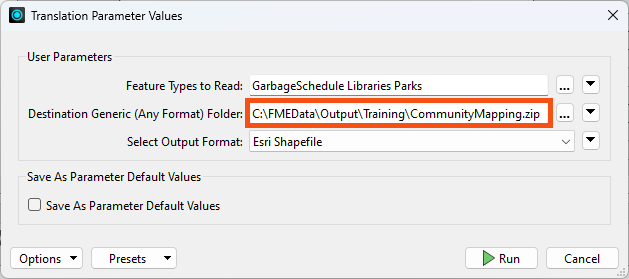
- Click the Run button to run the translation.
- Examine the output folder.
- FME created a zip file, which contains all the selected tables it wrote to Shapefile format.
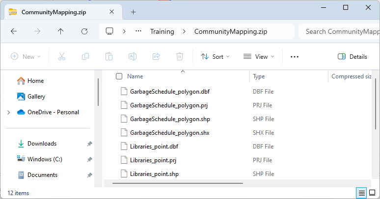
Now, you have a solution that almost anyone can open and run. If you publish the workspace to FME Flow, the same user parameters will be available.
6) Tile Output
The city plans to greatly expand the size of these layers soon. Therefore, they'd like the output of the workspace to be tiled into four spatial quadrants, writing out each layer in four separate files.
This is easy to accomplish with the Tiler transformer and a dataset fanout.
- Add a Tiler between the two feature types.
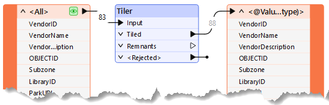
| Define Tiles By |
Number of Tiles |
| Columns |
2 |
| Rows |
2 |
- Click OK.
- These settings will add grouping attributes to each record,
_column and _row, which represent which column and row they fall into spatially.
7) Configure Dataset Fanout
Now that we have attributes we can use to group the output, we can use them in a dataset fanout expression to construct a custom path.
- Expand the CommunityMapping [GENERIC] writer in the Navigator and double-click Fanout Dataset.
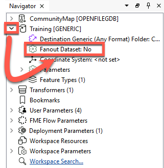
- Notice that opening the parameter this way automatically enables Fanout Expression and moves the ZIP part of the path into the Fanout Expression.
- However, we want to add the
_column and _row attributes to the expression as well.
- Click the drop-down arrow and choose Open Text Editor.
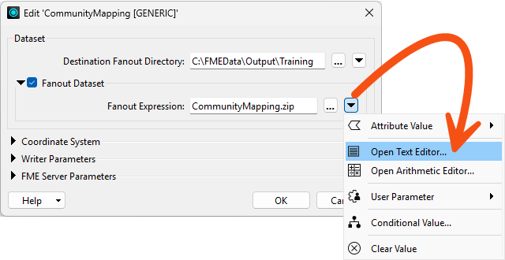
- Construct or paste in the following:
CommunityMapping.zip\@Value(_column)x@Value(_row)\
This will create folders within CommunityMapping.zip that reference the tile like this:
The output of the writer feature types will then be spatially split between these folders, so each will contain shapefiles named for their original layer.
- Click OK twice to close the dialogs.
8) Save and Run Workspace
Before we run the workspace, we should delete the ZIP file we just wrote. Otherwise, we'll just add data to it.
- Find the ZIP file at C:\FMEData\Output\Training\CommunityMapping.zip and delete it.
- Then, save and run your workspace.
- Go back to C:\FMEData\Output\Training\ and look at the contents of the ZIP file by double-clicking it.
- You should now see the tile folder structure, with each folder containing its own shapefiles.
- If your output doesn't match the image below, ensure you have configured your Fanout Expression properly.
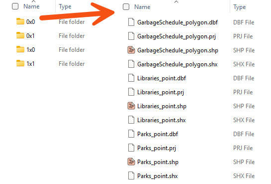
Now the workspace uses both feature type and dataset fanouts for ultimate control over the output!
Tips and Tricks: Geometry Handling with Fanouts
Did you notice that FME handled the different geometry types and output the files with the geometry as part of the name? It’s a Shapefile format thing. FME can never – and will never – write more than one geometry type to the same Shapefile .shp file.
Tips and Tricks: Dynamic Translations
The one drawback with the output of this workspace is that each Shapefile has attributes for all the source tables. To avoid that outcome, you would need to use a dynamic translation. We cover those in the FME Form Advanced learning path.